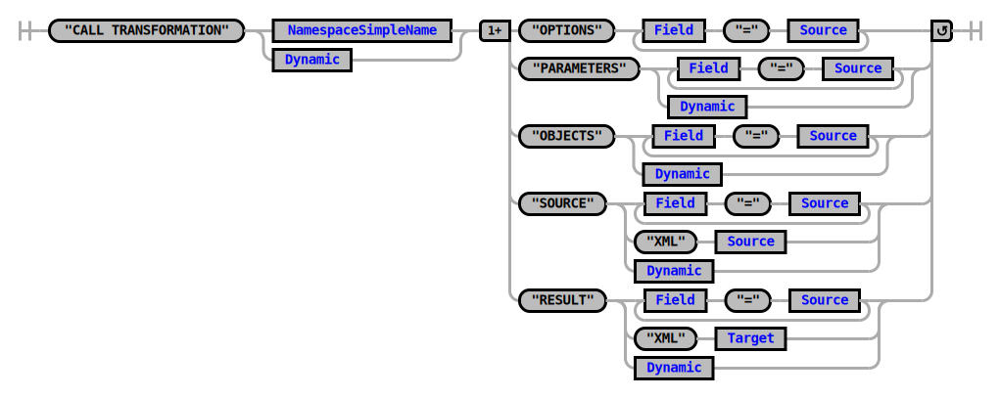

@LarsHvam
Heliconia Labs
|
Slides: https://larshp.github.io/advent-2020-presentation/ Feel free to use the chat Will answer questions if time permits |
Advent of code?
- https://adventofcode.com
- Yearly event since 2015
- 25 puzzles, one each day, starting December 1st
- Any language(Excel, APL, SQLite, ABAP)
- By Eric Wastl @ericwastl
- Puzzle input is unique for each user
Example: 2020 Day 01
Find the two entries that sum to 20201721, 979, 366, 299, 675, 1456
1721 + 299 = 2020
Puzzle answer is 1721 * 299 = 514579
But why?
- Practice problem solving
- Learn a new programming language
- Practice TDD
- Optimizing solution performance
- Make your own twist
My Recommendations
- Know your regex, https://regex101.com
- Just submit answers, it doesnt have to be perfect
- Checkout the Community:
SAP Community
My twist
- In ABAP
- Using somewhat modern ABAP syntax(740+)
- Share code on GitHub
- Run on Node.js
- Wait, what?
- Continuous Integration: Static analysis
- Continuous Integration: Run unit tests
1. Git
|
Decentralized version control system, it allows you to:
GitHub Hosting service for git, free for public projects.
|
| started ~5 years ago | ~100000 lines | ||
| ~4300 commits | 7.02 and up | ||
| 110+ contributors | MIT License |
abapGit Design Goals
- Easy installation
- Easy upgrade
- Small system footprint
- Code readable in git repository
Resources
2. Static Analysis
abaplint
lint, or a linter, is a tool that analyzes source code to flag programming errors, bugs, stylistic errors, and suspicious constructs- Open Source
- MIT License
- TypeScript
- abaplint.org
syntax
rules.abaplint.org
playground.abaplint.org
abaplint - Use Cases
Continuous Integration?
??? Jeninks Exact + Fast feedback3. Automatic Downport
CLASS lcl_bar DEFINITION. ENDCLASS. CLASS lcl_bar IMPLEMENTATION. ENDCLASS. FORM foo. DATA(lo_moo) = NEW lcl_bar( ). ENDFORM. |
4. Transpiling
LOOP AT lt_strings INTO lv_string1.
LOOP AT lt_strings INTO lv_string2.
IF lv_string1 + lv_string2 = 2020.
output = lv_string1 * lv_string2.
output = condense( output ).
WRITE output.
RETURN.
ENDIF.
ENDLOOP.
ENDLOOP.for (const unique1 of abap.statements.loop(lt_strings)) {
lv_string1.set(unique1);
for (const unique2 of abap.statements.loop(lt_strings)) {
lv_string2.set(unique2);
if (abap.compare.eq(abap.operators.add(lv_string1,lv_string2), constant_2020)) {
output.set(abap.operators.multiply(lv_string1,lv_string2));
output.set(abap.builtin.condense(output));
abap.statements.write(output);
return;
}
}
}
5. All Together Now
https://github.com/larshp/abap-advent-2020Automatic Upport
Future Work
- Serverless ABAP, https://github.com/open-abap
- Support Unit Testing of ABAP code
- Database Support, basic SQLite done
#ABAPisNotDead
https://larshp.github.io/advent-2020-presentation/@LarsHvam

Links
|
abapgit.org abaplint.org dotabap.org |
Disclaimer

Open source
Test in sandbox